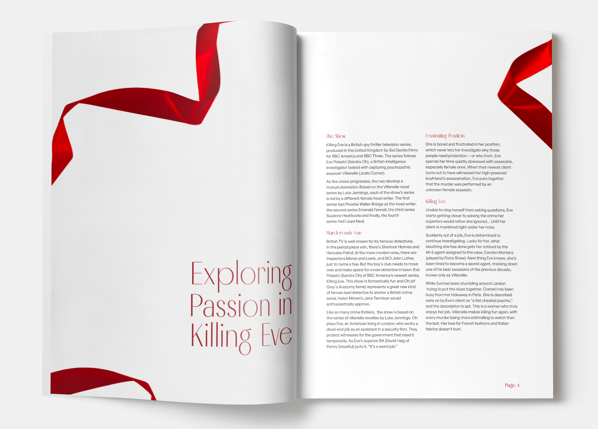
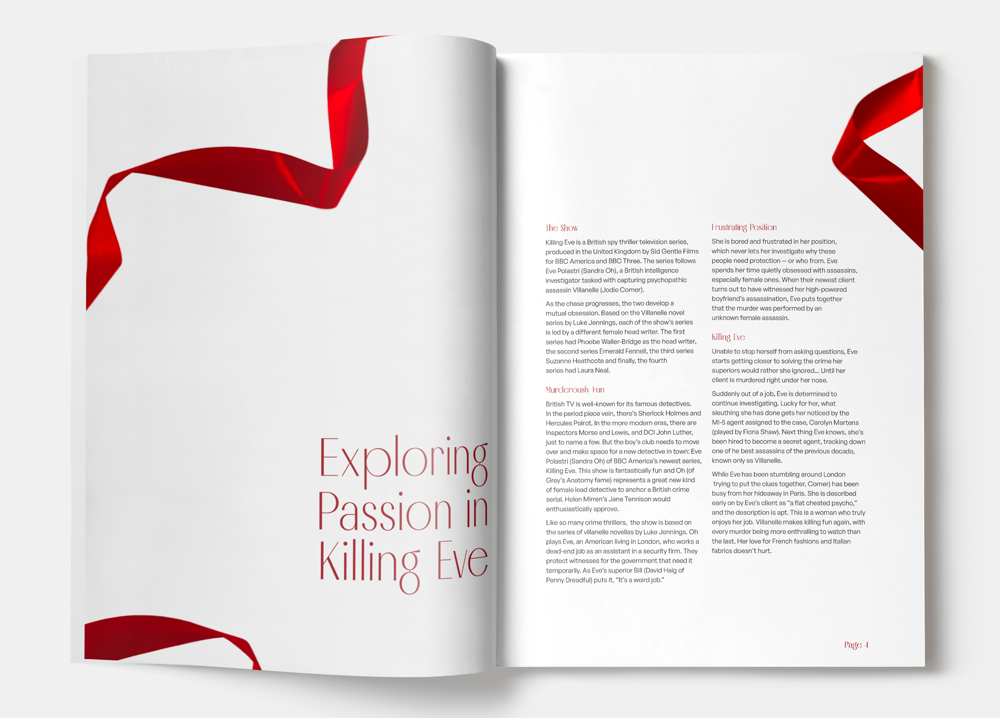

The hero of the design, the analogue type, is created out of ribbon to best express the style of the show, Killing Eve. Visually, the colour red and ribbons are already used as key themes within the show.
Ribbons create a twisting, mesmerising path, and the way it curves
and flows through a scene is quite seductive. Visually, the colour
red and ribbons are already used as key themes within the show.
The layout guides the reader around the page using the ribbon and
white space. By using blank space around the design the text is the
main focus of the page, and brings attention to the analogue type.